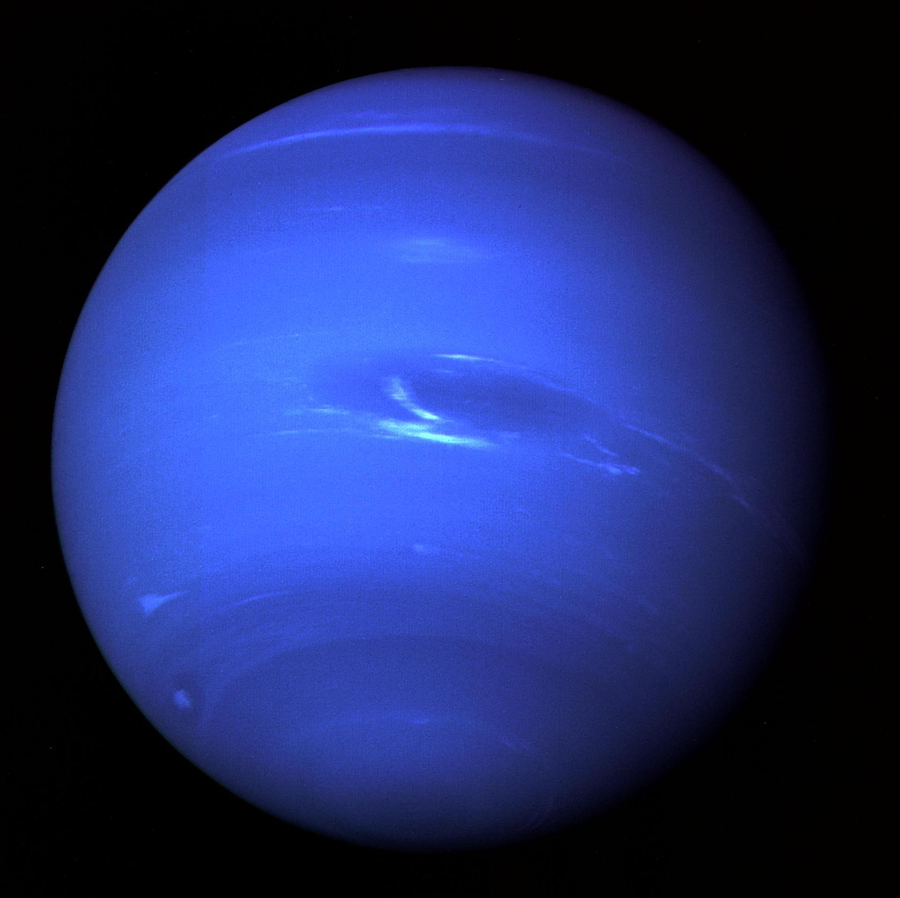

ÓRBITANEPTUNO
El planeta más lejano del Sol. Un gigante helado donde soplan los vientos más rápidos del sistema solar, de más de 2.000 km/h.
Diametro
49.244 kmGravedad
11,2 m/s²Duracion del dia
16 horasTemperatura media
-201 °C
ÓRBITAEl planeta más lejano del Sol. Un gigante helado donde soplan los vientos más rápidos del sistema solar, de más de 2.000 km/h.
Diametro
49.244 kmGravedad
11,2 m/s²Duracion del dia
16 horasTemperatura media
-201 °C